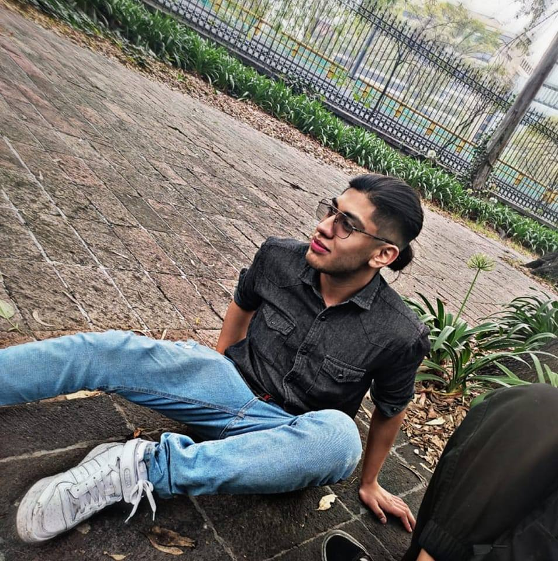

Bueno, para empezar después del año 2023 cotinué con mis estudios y a la par me estaba desempeñando en el área loboral pasando por distintas consultoras de tecnología y después de algunos años obtuve la oportunidad de participar en el proceso de selección de una Big Tech Company. Pase por varias entrevistas y filtros para obtener la posición de Software Engineer.
En el año 2028 estoy viviendo cómodamente en mi propio hogar situado en el mismo municipio en el que crecí y me desarrollé, solo que ha diferencia de hace unos cuantos años hoy tengo una mejor posición económica y por lo mismo tuve la oportunidad de adquirir mi propia casa.
Después de varios años de preparación en la universidad y un par de años más en el ámbito laboral, tuve la oportunidad de aspirar a una posición de Software Engineer en Microsoft. Asi que a dia de hoy ese es el cargo que estoy desempeñando en la compañia, adicionalmente a ello también tengo unos proyectos propios que siguen en desarrollo pero espero que en un par de años más estén con un avance significativo.